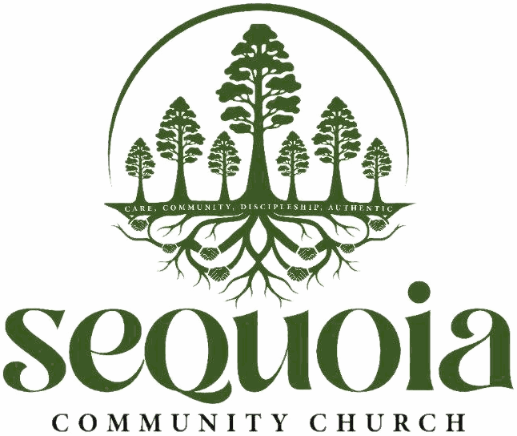

A sequoia never grows tall on its own. It grows in a grove — roots intertwined, holding one another up. We believe the Church is meant to grow the same way: together, in community, strong in Christ.
Sequoia Community Church held its first gathering on April 30, 2026, and became an official 501(c)(3) that July — but the vision behind it started earlier, in prayer. When our founders asked God why He'd have them start a church, His answer was simple: “I want it to carry your DNA.” Four words came out of that season — Authentic, Care, Community, Discipleship — and they've shaped everything since.
Sequoia Community Church is a church rooted in authentic relationships, shepherded with genuine care, united and strengthened in community, and transformed through discipleship.
We believe life is best shared, discipleship best formed, and leaders best raised in the soil of small groups — where members are known, shepherded, and sent out to serve. As small groups multiply, members become spiritual fathers and mothers, the whole body grows in maturity and number, and our community feels and reflects the tangible love of Christ.